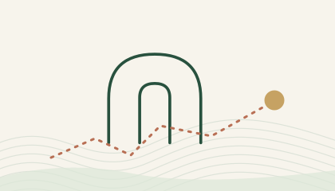
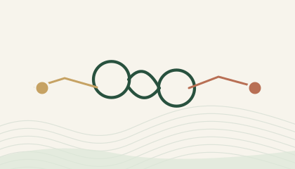
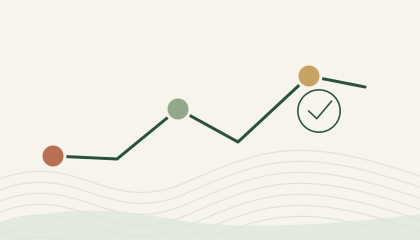
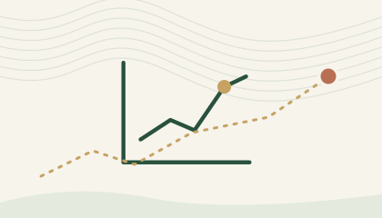
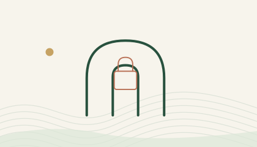
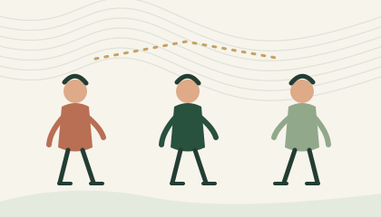
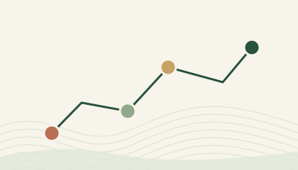

/
Career canopy
People grow a career network beneath a branching tree.
47 original page-specific drawing concepts. They share warm white, forest green, sage, terracotta, ochre and quiet contour lines while changing the subject to match each route. These are artwork directions for review, not implemented screens.
People grow a career network beneath a branching tree.
A winding path connects distinct job markers.
A leaf-bearing shield protects a private profile.
Two hands meet around a common agreement.
A returning member steps through a welcoming arch.
A new sprout rises beside a newly created profile.

Legacy login entry follows a single clear path home.
Legacy registration entry becomes a fresh branch.

Two account paths resolve into one secure identity.
Candidate and recruiter paths branch from one starting point.
A protected bud holds promise while approval is pending.
A company invitation plants the first shared workspace.
An invited teammate joins the organization's tree.
An accepted invitation closes an open connection.
A secure email check opens the next career step.
A candidate orients toward the next useful step.
A professional identity grows around its person.
Skills, experience, and story form a layered portrait.
Profile and jobs connect through a thoughtful match graph.

An application progresses along a gentle career trajectory.
Many useful conversations branch from one inbox.
Two people face one clear conversation thread.
Candidate and recruiter exchange a role-centered message.
A recruiter cultivates a varied field of opportunities.
A new job posting begins like a planted seed.
Distinct workplaces form one approachable landscape.
A request travels respectfully between professionals.
A strong team supports the wider talent ecosystem.
Several roles grow from one coherent hiring plan.
Individual profiles form a diverse talent picture.
Practical skills are measured with care and clarity.
Messages bridge candidates and hiring teams.
Each invitation adds another person to the team.
People share responsibility beneath a common canopy.

Hiring outcomes rise from quiet topographic curves.
Organization settings are stable dials within a living system.
A new owner enters a protected company workspace.
Company details establish roots for a growing team.
Platform areas connect through a readable oversight map.

An uncluttered entrance protects platform operations.

Many individual accounts form a legible community.
Published opportunities are organized as clear records.
A fair review focuses on the person and their work.

Recorded events flow along a visible timeline.
Distinct companies sit in one accountable platform view.
Company invitations move toward new workspaces.
Administrator controls remain calm and intentional.